Q1_01_duration · 原始样本长度与可配对状态
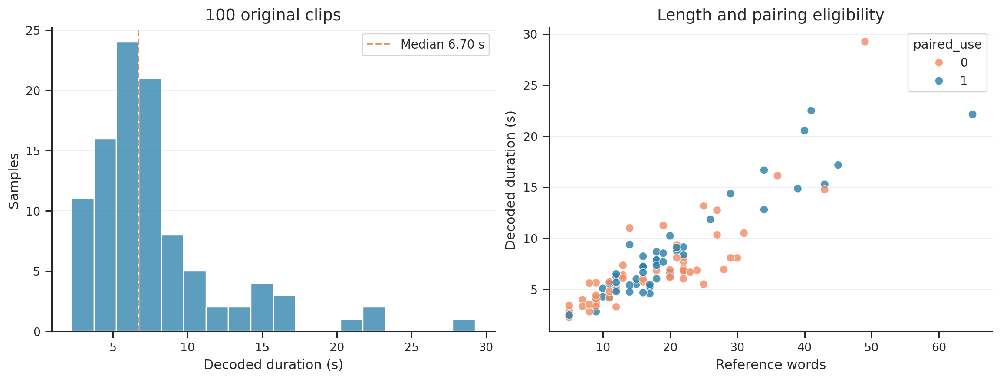
100条实际解码时长与词数。paired_use为当前流程可配对标志，不是人工正确率；解码时长与题面标称时长口径不同。
Q1_02_coverage · 文本定位与视觉有效覆盖率
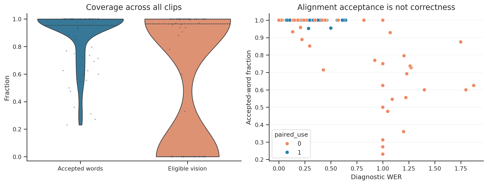
小提琴由100条样本的实际比例估计，cut=0，保留极端值。CTC接受率不等于人工对齐精度；WER来自诊断转写，不是情感分类误差。
Q1_03_clock · 声画时钟起点与终点差异
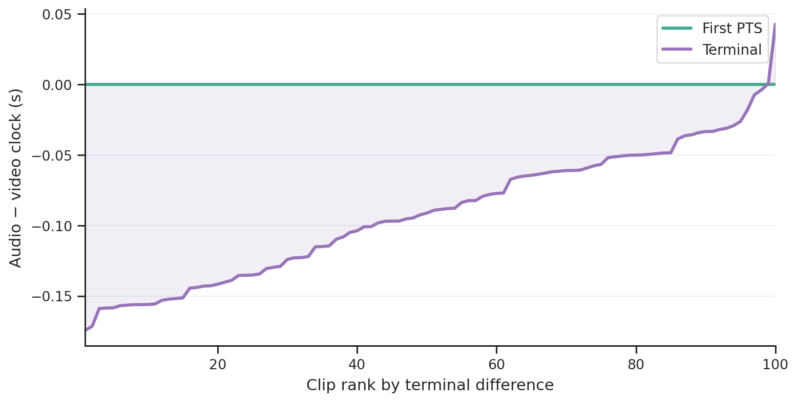
声画媒体时钟诊断，不代表说话人身份正确或单词对齐精度。全体样本保留，零线方便区分提前与滞后。
Q1_04_quality_rank · 逐样本质量差异与视觉片段数
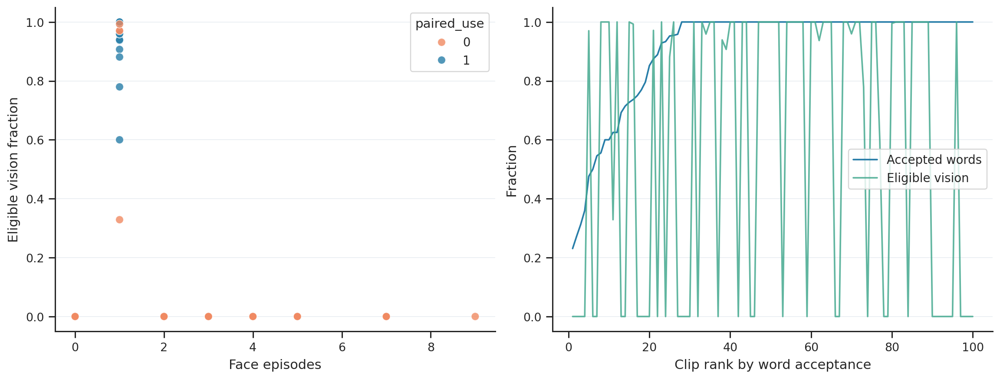
右图按文本接受率升序排列，视觉值使用同一排列而非独立排序。揭示低覆盖样本，不能声称所有样本均达到高质量。
Q1_05_problem_partition · 自动补查样本的问题分区
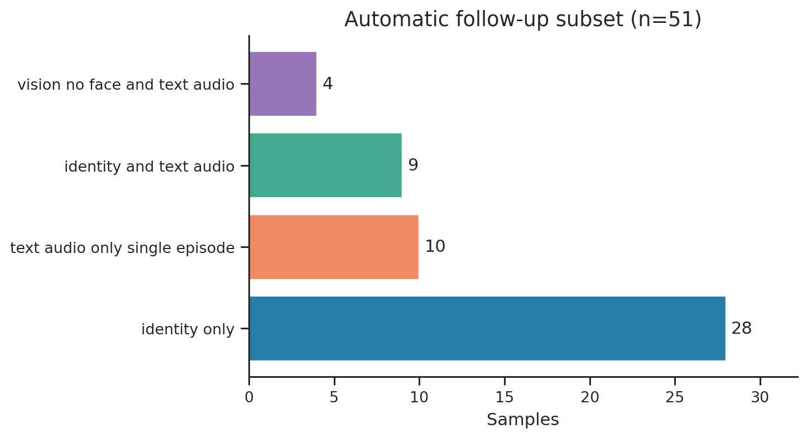
仅统计problem_partition中进入补查的样本，分母不是全部100条；身份与声文问题可以并存。该图是困难样本构成，不是消融提升。
Q1_06_identity_similarity · 人脸片段身份相似度与嵌入离散程度
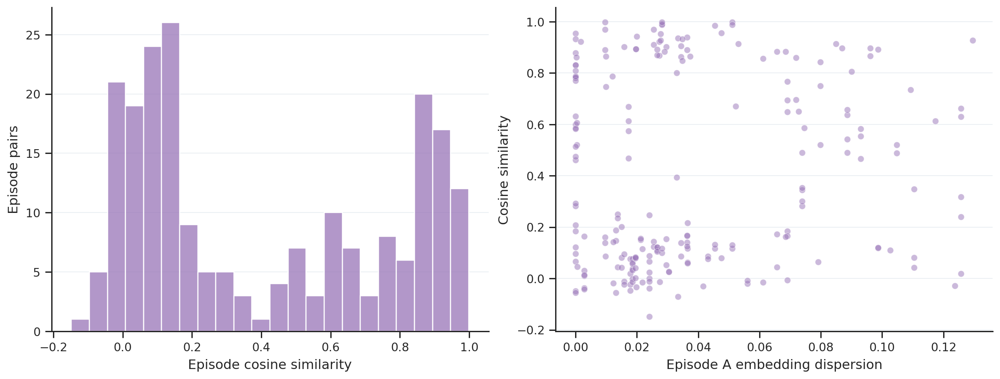
所有已保存片段对的ArcFace余弦值；片段对共享样本且不独立。余弦阈值属于自动身份聚类判断，不是人工身份准确率；该图诊断质量，不证明说话人已经确认。
Q1_07_sync_null · 视听同步得分与错位随机参照
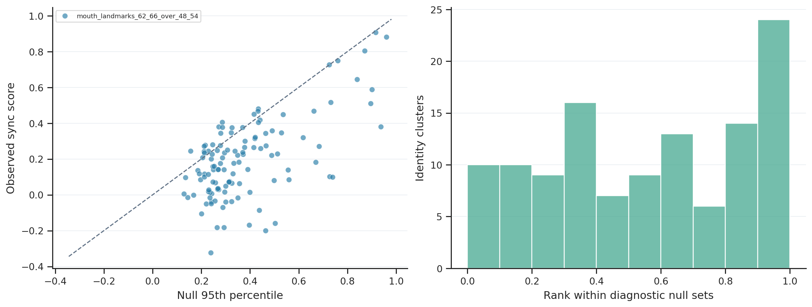
嘴部运动与音频能量的诊断相关统计，对照来自移位与跨样本组合。零假设排序不是经过多重比较校正的显著性，也不是说话人准确率；低于null p95的真实分数如实保留。
Q1_08_identity_quality · 身份嵌入的成功数量与稳定性
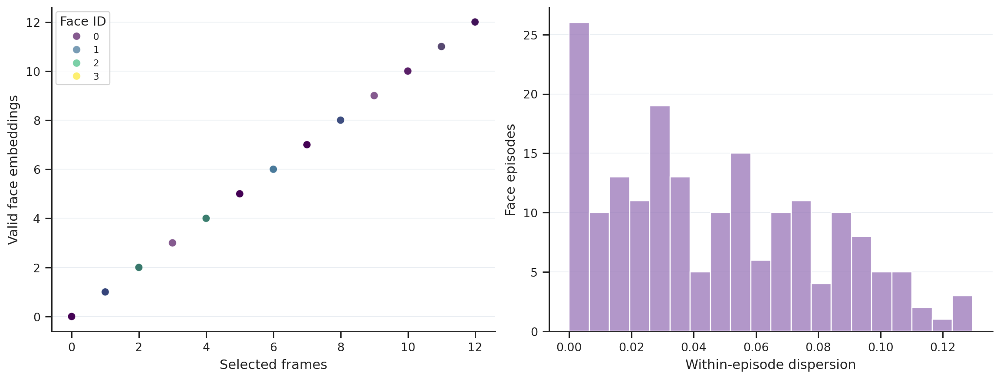
统计已检测到的人脸episode，分母不是100条原始样本。成功嵌入数量与片段内一致性分开呈现，未把没有人脸的样本当成人脸聚类正确。
Q2_01_training · 最终模型训练损失与验证曲线
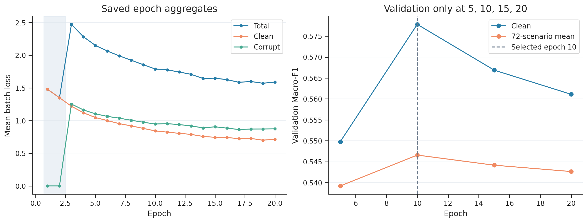
左图是逐轮内各batch等权平均，不是逐step。第3轮总损失增加是加入受损视图损失；右图只连接实际记录的四个验证点。训练checkpoint与FP16导出包数值口径不同。
Q2_02_seed_training · 固定结构三种子训练波动
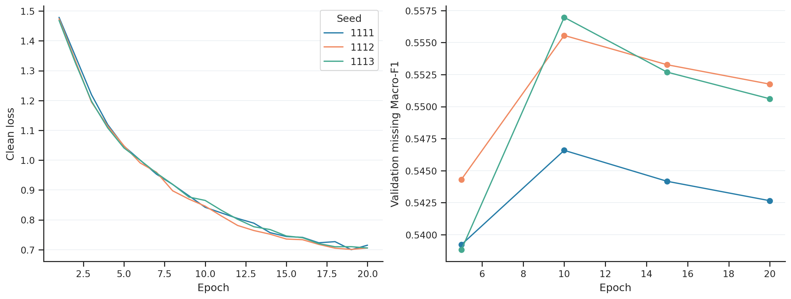
三个种子均为BERT8全层微调；部署种子预先固定1111。图呈现训练随机性，不能用单seed优势代表多seed稳定优势。
Q2_03_schedule · 学习率与延长训练的验证表现
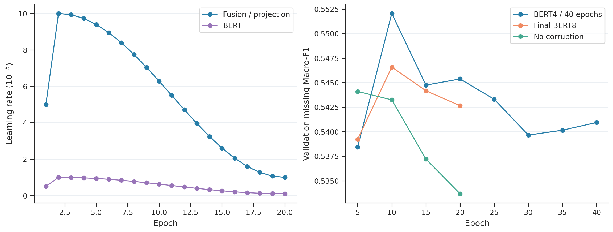
BERT学习率为下游学习率0.1倍，左图由保存lr与最终配置计算；40轮BERT4与BERT8结构和配置不同，只能视为探索，不能把差值归于训练轮数。左图数据见Q2_01_training.csv的lr列。
Q2_04_ablations · 最终结构的三个直接消融
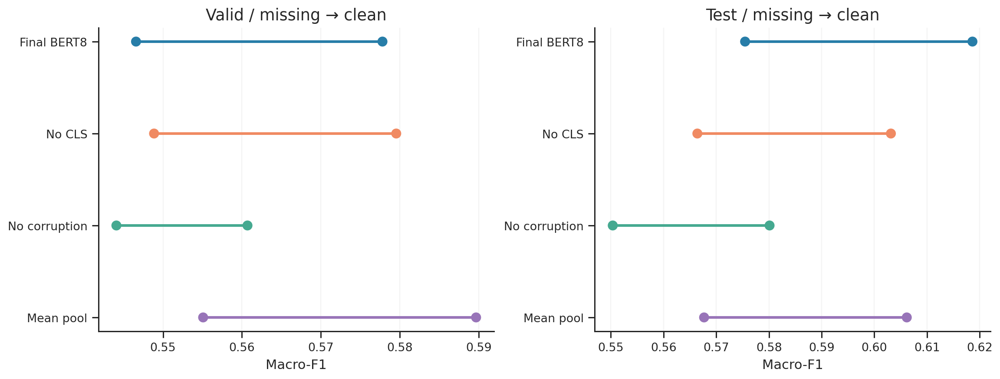
短线左端为72场景均值，右端为clean（按实际数值绘制）。同seed的去CLS、去人工缺失训练、均值池化实验；test已参与探索。这里使用ledger训练checkpoint评估，不与导出包最后一位小数混用。
Q2_05_exploration · 保存的无偏置探索结果全景
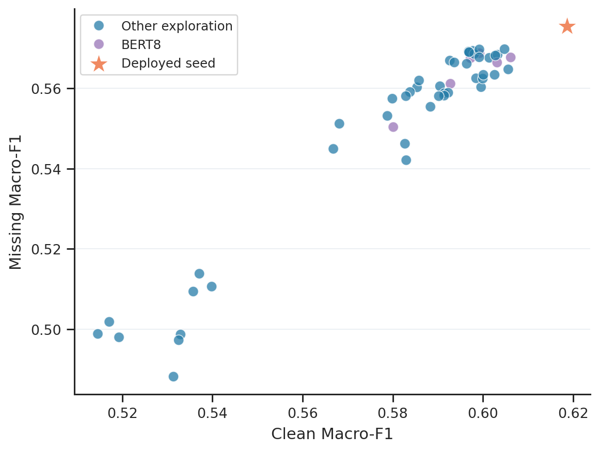
展示保存的test无类别偏置评价记录，点可能属于同一架构的不同配置/种子，非独立试验。两坐标使用明确的局部范围以显示接近分数，不作为独立泛化证据。
Q2_06_grid · 验证与测试72场景完整热图
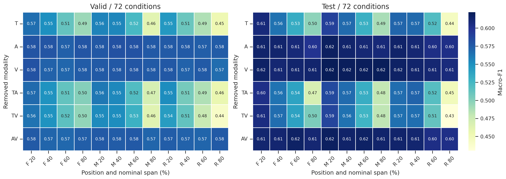
F/M/R为前/中/后，20–80为名义区间比例，两个面板共享色标。每格是一个场景的全样本Macro-F1；自然缺失仍保留。全部场景均展示。
Q2_07_robustness · 按模态分解的缺失强度曲线
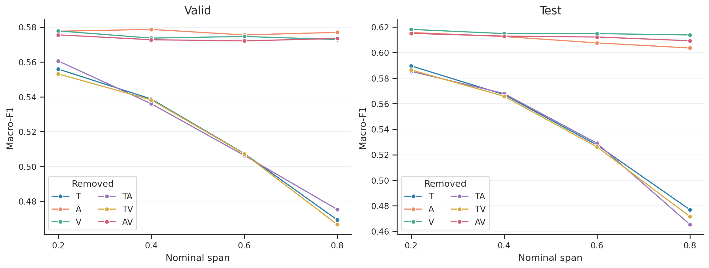
各点是前中后三个位置等权平均。连线仅引导阅读，未拟合未评估缺失率；无独立重复误差带。文本相关缺失退化较大。
Q2_08_positions · 缺失位置对分类和回归的影响
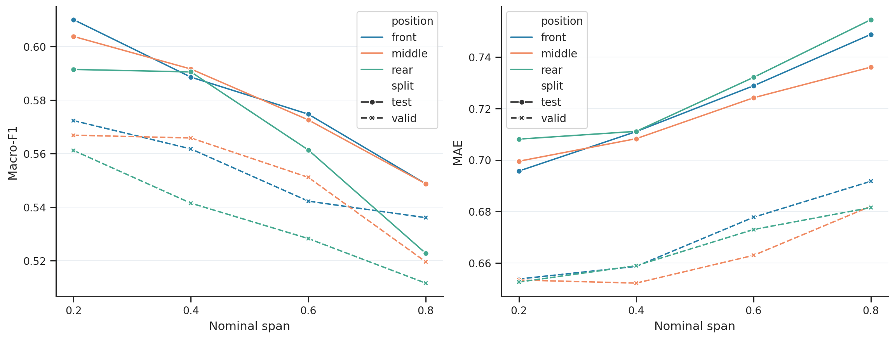
每条曲线均跨六种模态条件平均，valid和test分开编码。位置差异可能同时受到实际删除率和共同受损样本构成影响，应结合配对图。
Q2_09_actual_deletion · 名义缺失跨度与真实删除率
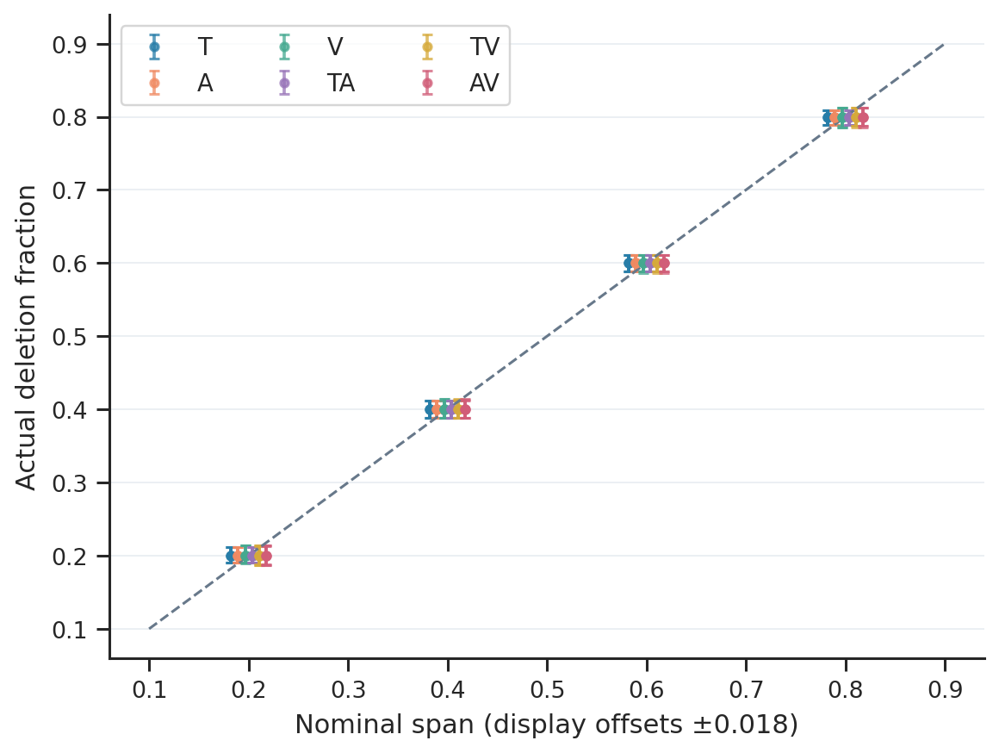
点为场景内样本实际删除率中位数，线为四分位范围而非置信区间。各模态横向偏移仅避免重叠，原始名义比例保留CSV；不把缺失区间长度当作实际内容删除比例。
Q2_10_paired_conditions · 共同受损样本上的配对条件比较
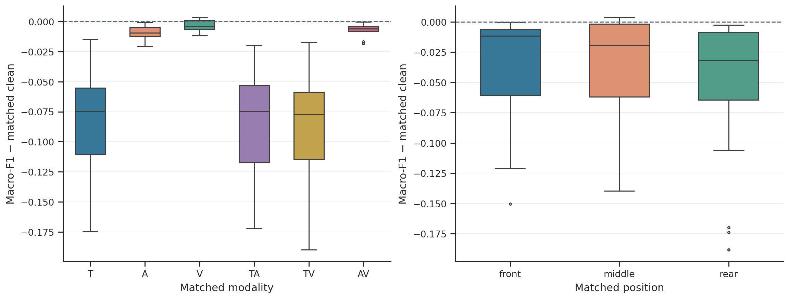
每个点/箱体汇集条件组的指标差值，非逐样本F1。比较在同组共同受损样本上完成；不同组仍可能具有不同分母，不能当成独立重复。
Q2_11_stress · 整模态与多模态压力场景
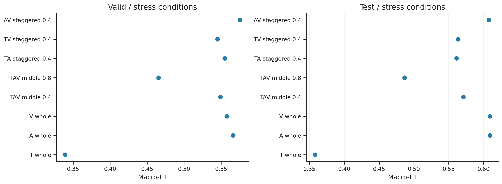
压力测试与主72场景分开，不纳入主均值；点图使用明确局部横坐标，不以截断柱形夸大差异。
Q2_12_class_metrics · 验证与测试类别瓶颈
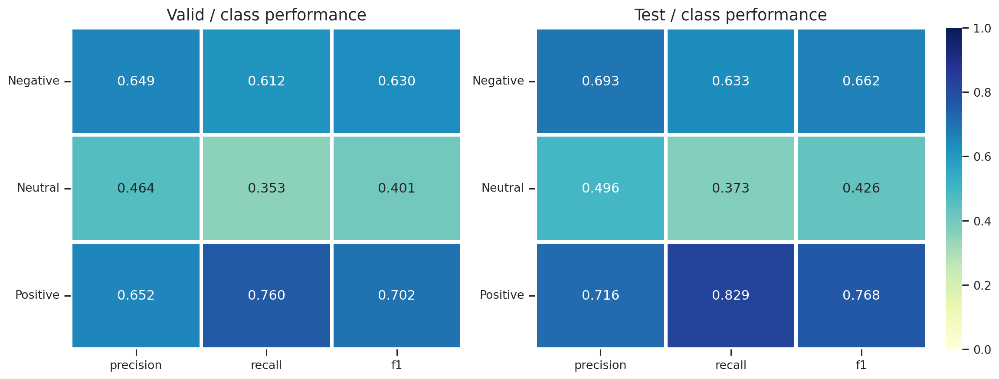
中性类召回和F1明显低于正负类。表格记录每类support，所有色值固定0–1，避免通过各格独立缩放夸大。
Q2_13_error_distribution · 回归残差小提琴与绝对误差分布
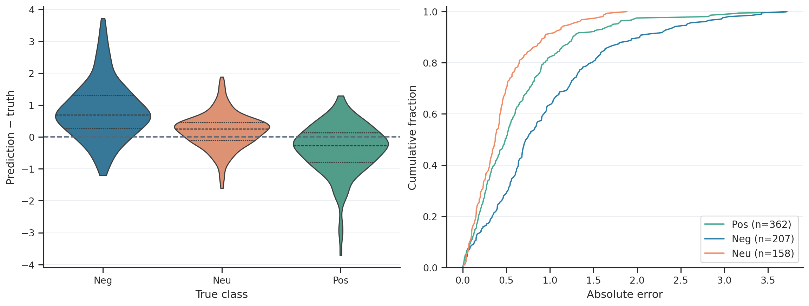
727条test真实逐样本预测；不裁去离群误差。各真值类残差方向反映回归向中部收缩。累计曲线由原始误差排序计算，无平滑拟合。
Q2_14_prediction_diagnostics · 测试混淆矩阵与回归密度
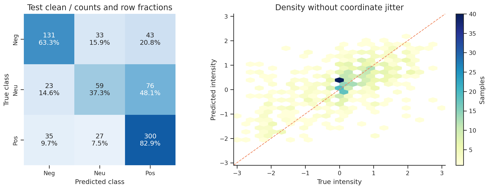
回归图使用真实坐标聚合为六边形密度，不对真值抖动。虚线为理想预测。test已参与探索；验证集逐类诊断见Q2_12。
Q2_15_special_availability · 附件3全部样本的当前可观测状态
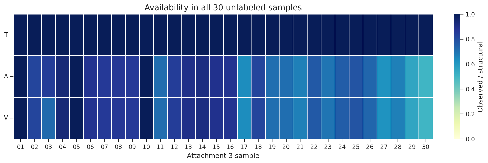
可观测位置占结构位置比例；自然零行不推断为某种具体提取失败。补偿计数均为0，最终模型没有补偿模块。专项无真值，不报告准确率。
Q2_16_valid_diagnostics · 验证集真实重载的混淆与回归密度
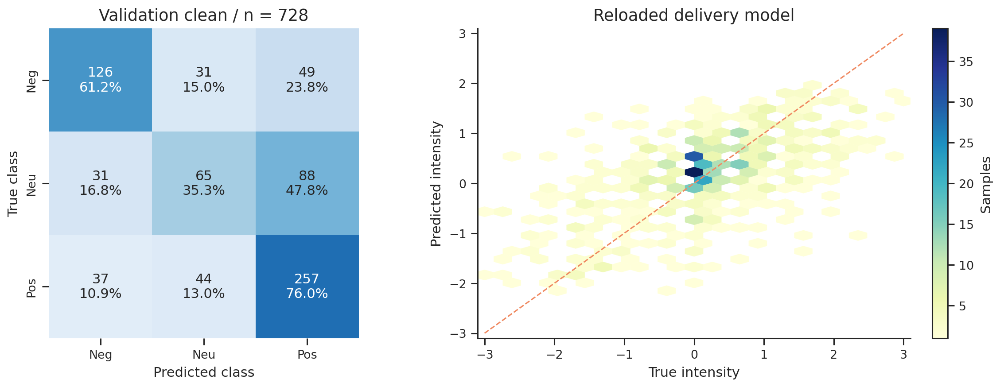
本地离线交付包真实推理，Accuracy/Macro-F1与Q3保存结果完全一致，MAE差约3×10^-9；验证集已用于选模，不是独立test。中性类184条中65条判对，88条误判正类。
Q2_17_valid_residuals · 验证集分情感类别残差与误差分布
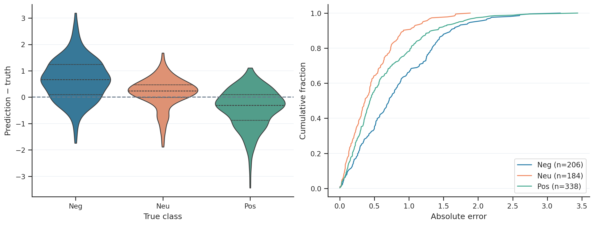
未删除离群样本，小提琴cut=0。负向类偏高估、正向类偏低估可作为向中性回缩的描述，不能仅凭图推断训练因果机制。
Q2_18_valid_confidence · 验证集置信度与错误关系
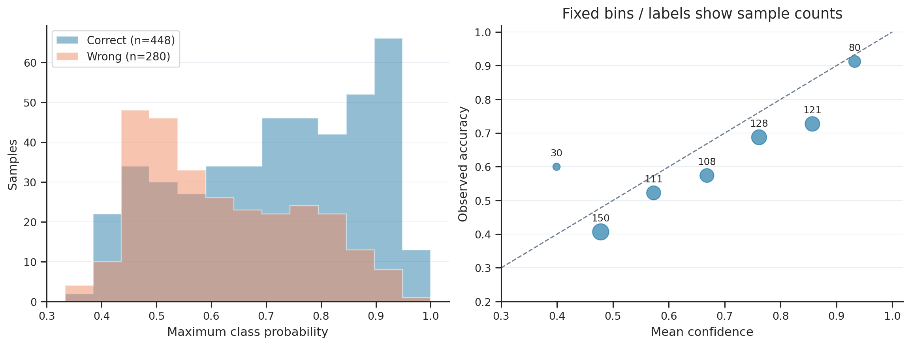
右图固定7个等宽置信度区间，圆面积与样本量成比例，标注样本数；斜线是概率与正确率相等参照。仅做事后诊断，不进行校准拟合或阈值重新选择。分箱精确数据另见Q2_valid_confidence_bins.csv。
Q2_19_valid_groups · 验证集按有效文本长度分层
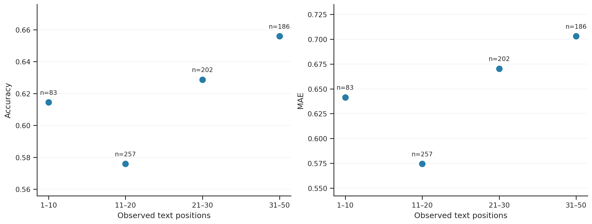
固定长度分层的描述性准确率与MAE，各组标签组成可能不同，不能声称长度造成性能变化。点图和明确局部纵轴减少空白；每组分母标出。
Q3_01_faithfulness · 三预算忠实性增益与视频簇区间
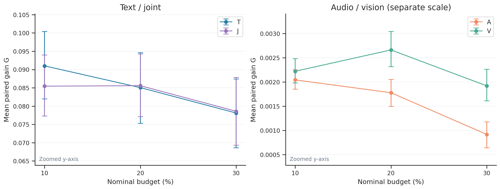
G为关键集合D减严格匹配随机集合平均D。误差线为video_id簇bootstrap 95%区间；T/J与A/V分别缩放并显式标注，纵轴为带刻度的局部范围，不从0开始，不能据线条高度比较跨面板效应。
Q3_02_gain_violin · 20%预算逐样本忠实性增益分布
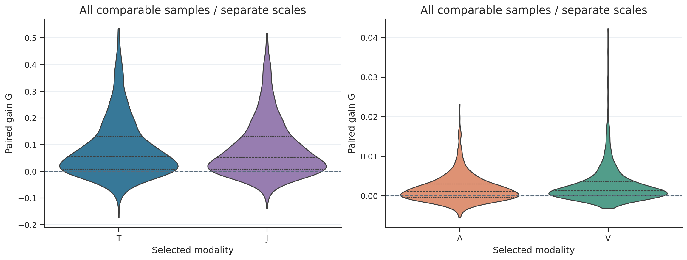
所有可比较样本进入小提琴，cut=0不外推密度；负增益反例全部保留。不同模态可比较分母不同，原始CSV含sample_id/video_id/n_random。
Q3_03_gain_ecdf · 忠实性增益累计分布与负增益比例
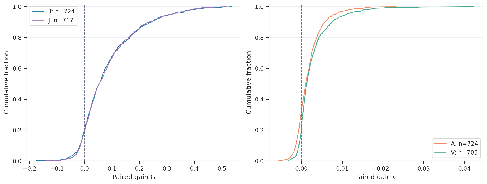
经验分布无需核带宽，显示负增益与长尾，补充小提琴的平滑显示。样本相关性不允许把24k条重复记录当成独立样本。
Q3_04_control_coverage · 严格随机对照的可比较覆盖率
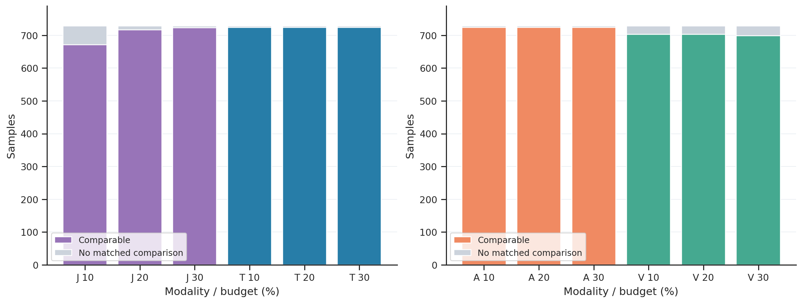
灰色包含无可用模态/无匹配对照，具体拆分见CSV的not_applicable与without_controls。每条主路径计划728条；未补齐无合法随机集合的样本。
Q3_05_random_counts · 逐样本严格随机集合数量
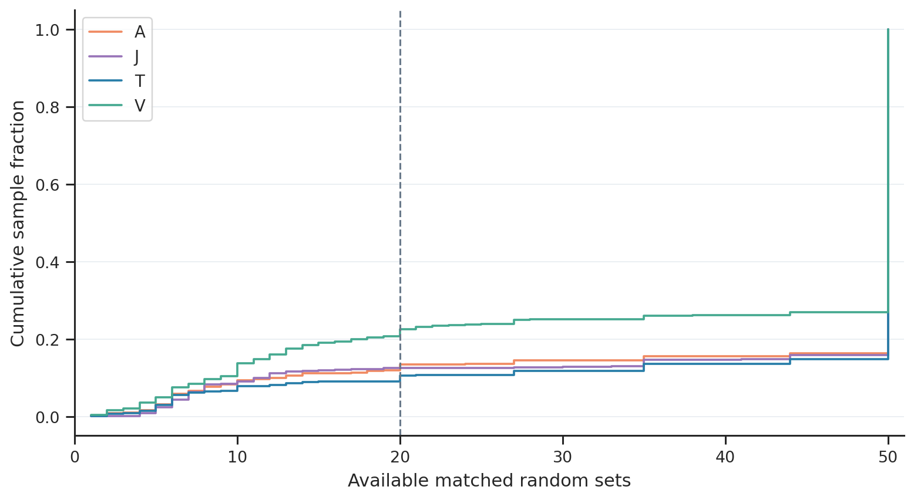
每样本最多50组，少于20组的样本仍用于描述均值，但不足以支持细尾概率判断；集合数不是独立样本量。
Q3_06_keep · 保留实验的配对增益与反例
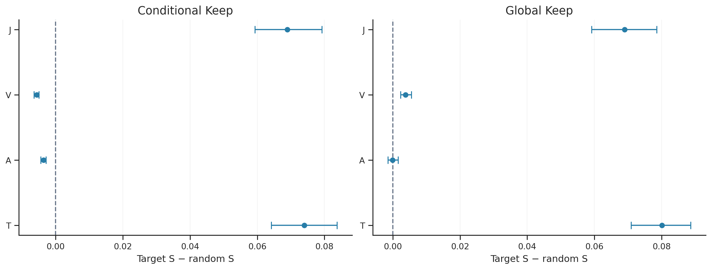
S=1−D。global保留只留下关键集合；conditional只移除当前模态域内其余内容。关键删除集合不必是最佳保留集合，负增益如实展示。
Q3_07_granularity · 整词和分块选择的粒度敏感性
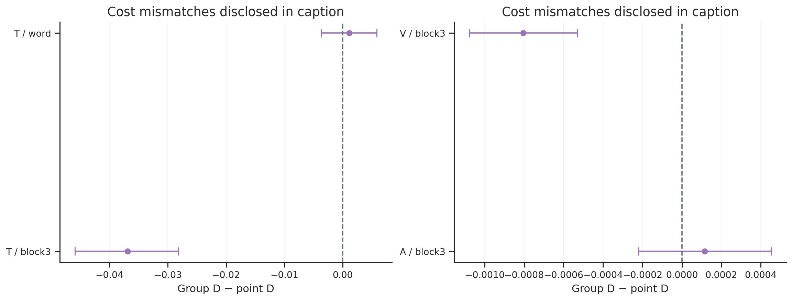
历史汇总中block3与point存在成本不等配对：T/A各22条、V26条；因此不能将该图block3差值解释为纯同成本粒度因果效应。word成本差异0，区间跨0；整词可读性不等于忠实性显著提升。
Q3_08_modality_shapley · 全验证集整模态影响与双输出Shapley
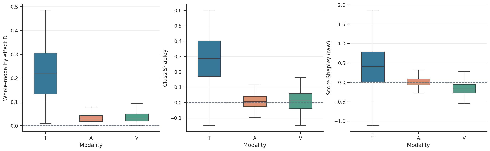
箱体Q1–Q3，中位线与1.5IQR须；图中不显示离群点以保持主体可读，全部值在CSV且Q3_09显示全分布。带符号Shapley区分抑制与支持，不能和绝对影响D混称。
Q3_09_modality_ecdf · 整模态影响全范围分布
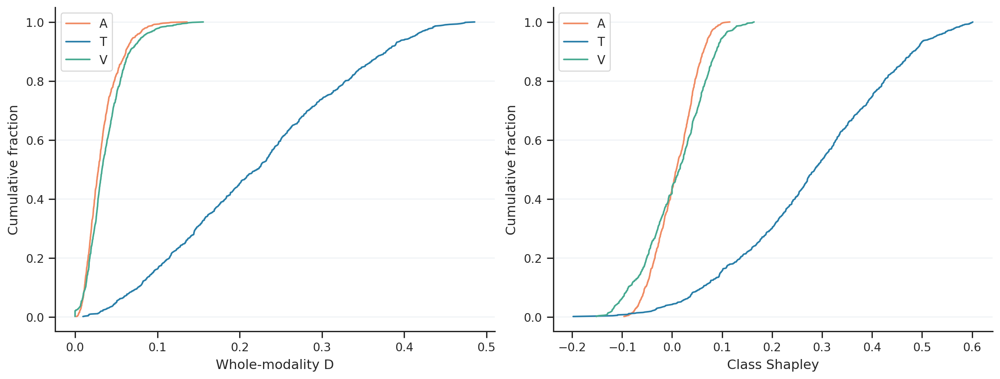
所有有限观测均进入经验累计分布，包含零观测模态按现有汇总定义的零贡献；可与Q3_08主体箱体互补，不隐藏长尾。
Q3_10_special_modality · 附件4全部20条模态作用与双输出贡献
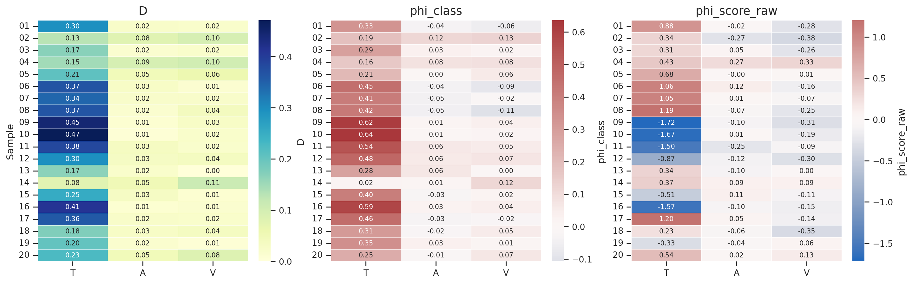
各面板各自的明确色标：D非负，Shapley有符号。13号视觉无观测；14号分类与强度首位模态不一致，不能用一张平均模态图掩盖。
Q3_11_direction_failures · 方向重测的全部验证集失败样本
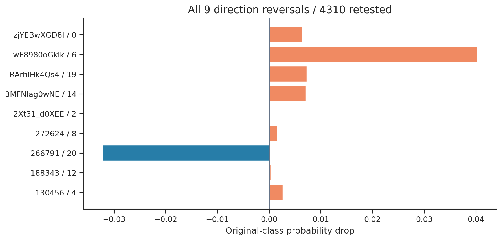
8个suppress候选联合删除后概率反而降低，1个support候选反而升高。方向只相对于固定原预测类别；局部单点符号不能保证联合集合方向。
Q3_12_low_impact · 关键集合与低影响集合对照
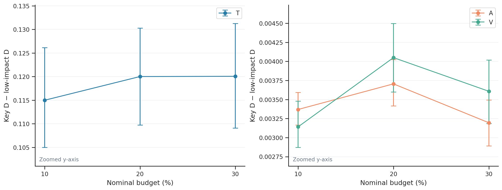
同样本关键集合与低影响集合的差值，区间为video_id簇bootstrap。文本与AV使用标明数值的不同局部纵轴；该对照补充严格随机对照，不取代随机集合几何匹配。
Q3_13_stratification · 正确错误与中性类分层忠实性
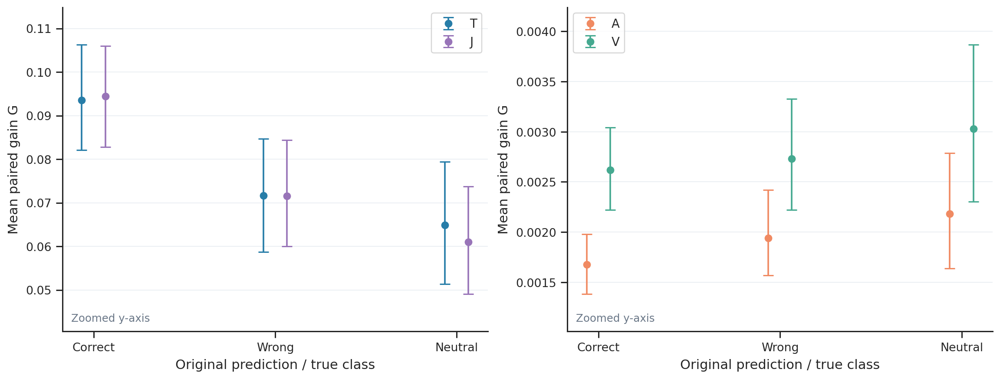
分层存在重叠，中性类可同时属于正确或错误组；并非三个互斥分组。错误预测也有正忠实性增益，说明解释可以忠实反映错误决策，不代表预测正确。
Q3_14_task_after_deletion · 关键删除与随机删除后的任务表现
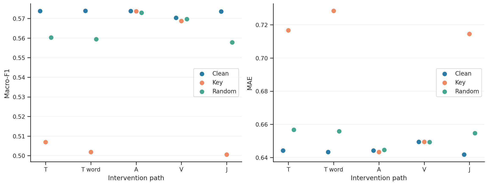
每条路径使用自己可比较样本集合上的clean、key和random；跨路径分母不同，不能直接解释路径间性能差。随机结果先逐重复计算任务指标再取均值，未用平均概率代替。
Q3_15_subset_predictions · 20条样本八个模态保留子集的实际输出
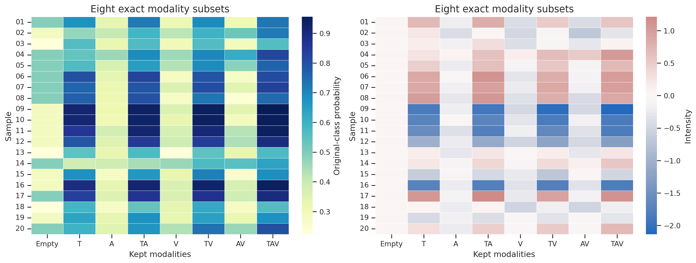
Shapley实际使用的八子集全枚举输出，概率始终跟踪原预测类别；不是各子集最大类别概率。Empty为训练先验回退；不同样本原预测类别不同。
Q3_16_budget_geometry · 实际预算可达性与连续片段数
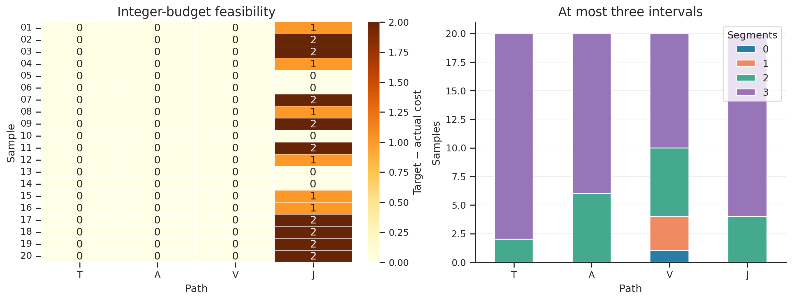
实际成本取不超过目标预算的最大合法值，不强行补齐。零观测模态可能无适用选择；对照匹配实际几何与成本。仅为20条专项的算法可行性诊断。
Q3_case_01 · 附件4样本01的三模态逐位置重要性
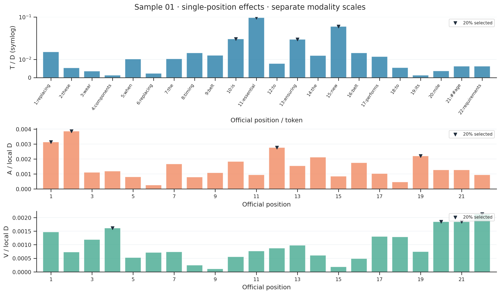
仅显示已观测位置，三角标记20% point集合；三模态独立纵轴，峰值超过中位数8倍时使用标明的symlog轴（线性阈值=2×中位数），保留峰值与小效应，禁止跨面板用柱高比较贡献。无观测V省略并在标题标出。所有位置为官方索引，不是秒数；单点D之和不等于联合D。
Q3_case_02 · 附件4样本02的三模态逐位置重要性
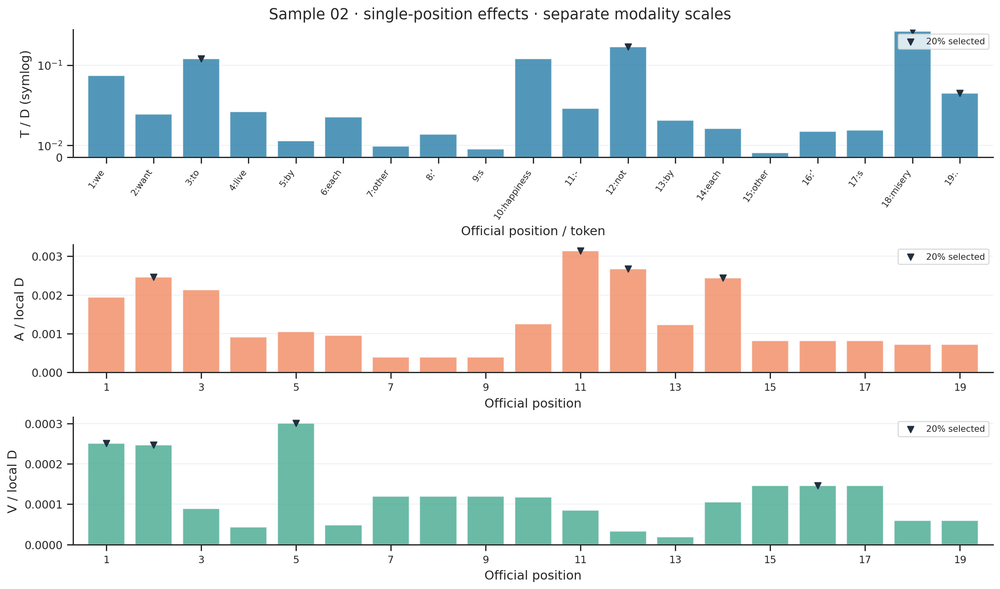
仅显示已观测位置，三角标记20% point集合；三模态独立纵轴，峰值超过中位数8倍时使用标明的symlog轴（线性阈值=2×中位数），保留峰值与小效应，禁止跨面板用柱高比较贡献。无观测V省略并在标题标出。所有位置为官方索引，不是秒数；单点D之和不等于联合D。
Q3_case_03 · 附件4样本03的三模态逐位置重要性
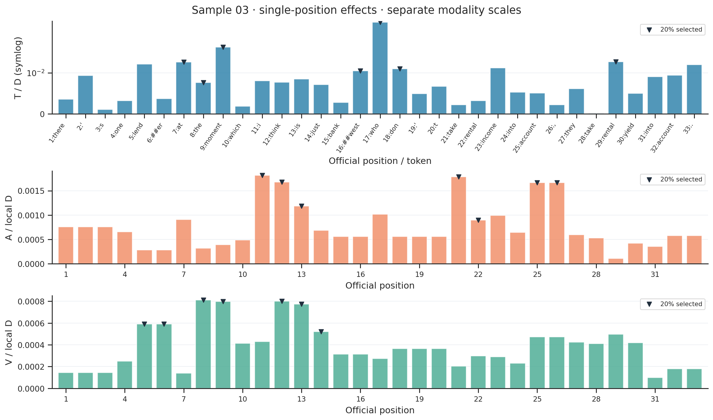
仅显示已观测位置，三角标记20% point集合；三模态独立纵轴，峰值超过中位数8倍时使用标明的symlog轴（线性阈值=2×中位数），保留峰值与小效应，禁止跨面板用柱高比较贡献。无观测V省略并在标题标出。所有位置为官方索引，不是秒数；单点D之和不等于联合D。
Q3_case_04 · 附件4样本04的三模态逐位置重要性
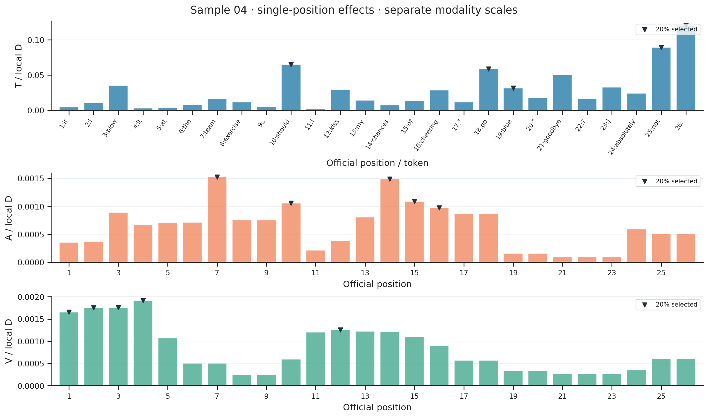
仅显示已观测位置，三角标记20% point集合；三模态独立纵轴，峰值超过中位数8倍时使用标明的symlog轴（线性阈值=2×中位数），保留峰值与小效应，禁止跨面板用柱高比较贡献。无观测V省略并在标题标出。所有位置为官方索引，不是秒数；单点D之和不等于联合D。
Q3_case_05 · 附件4样本05的三模态逐位置重要性
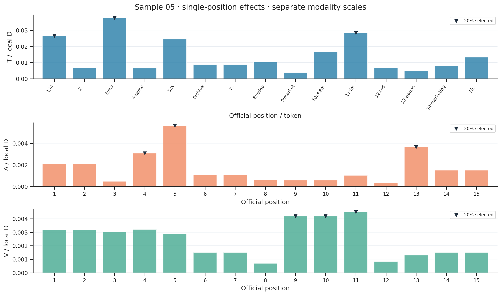
仅显示已观测位置，三角标记20% point集合；三模态独立纵轴，峰值超过中位数8倍时使用标明的symlog轴（线性阈值=2×中位数），保留峰值与小效应，禁止跨面板用柱高比较贡献。无观测V省略并在标题标出。所有位置为官方索引，不是秒数；单点D之和不等于联合D。
Q3_case_06 · 附件4样本06的三模态逐位置重要性
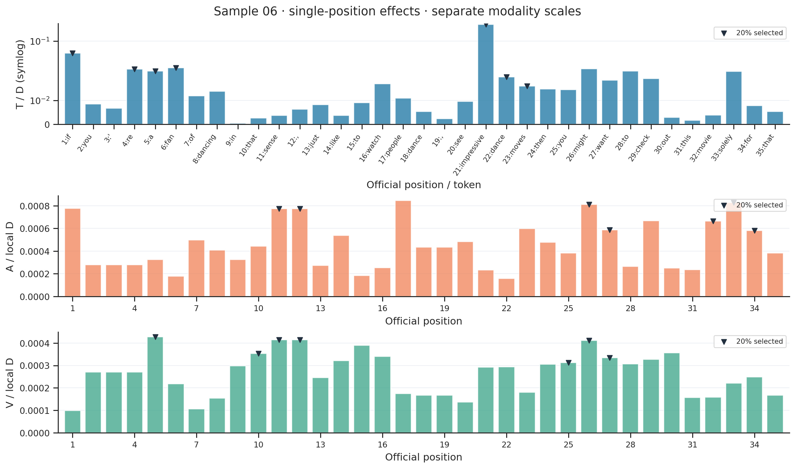
仅显示已观测位置，三角标记20% point集合；三模态独立纵轴，峰值超过中位数8倍时使用标明的symlog轴（线性阈值=2×中位数），保留峰值与小效应，禁止跨面板用柱高比较贡献。无观测V省略并在标题标出。所有位置为官方索引，不是秒数；单点D之和不等于联合D。
Q3_case_07 · 附件4样本07的三模态逐位置重要性
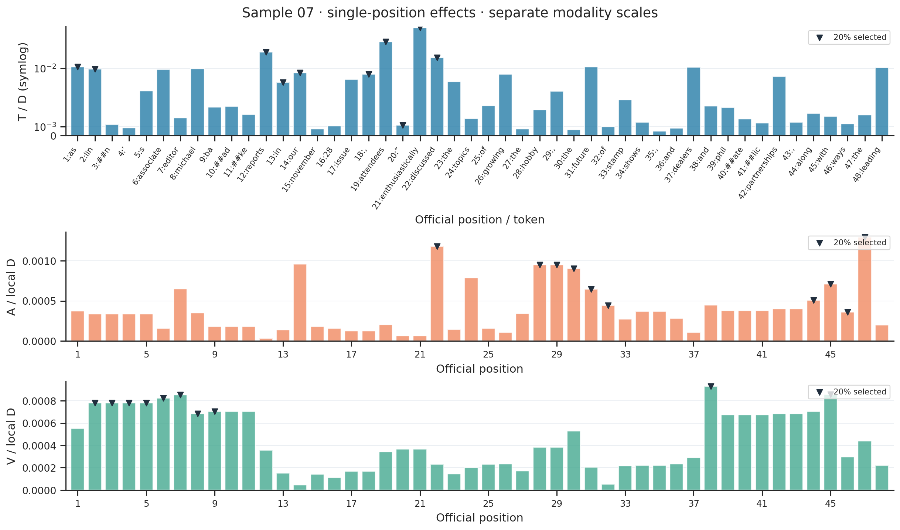
仅显示已观测位置，三角标记20% point集合；三模态独立纵轴，峰值超过中位数8倍时使用标明的symlog轴（线性阈值=2×中位数），保留峰值与小效应，禁止跨面板用柱高比较贡献。无观测V省略并在标题标出。所有位置为官方索引，不是秒数；单点D之和不等于联合D。
Q3_case_08 · 附件4样本08的三模态逐位置重要性
仅显示已观测位置，三角标记20% point集合；三模态独立纵轴，峰值超过中位数8倍时使用标明的symlog轴（线性阈值=2×中位数），保留峰值与小效应，禁止跨面板用柱高比较贡献。无观测V省略并在标题标出。所有位置为官方索引，不是秒数；单点D之和不等于联合D。
Q3_case_09 · 附件4样本09的三模态逐位置重要性
仅显示已观测位置，三角标记20% point集合；三模态独立纵轴，峰值超过中位数8倍时使用标明的symlog轴（线性阈值=2×中位数），保留峰值与小效应，禁止跨面板用柱高比较贡献。无观测V省略并在标题标出。所有位置为官方索引，不是秒数；单点D之和不等于联合D。
Q3_case_10 · 附件4样本10的三模态逐位置重要性
仅显示已观测位置，三角标记20% point集合；三模态独立纵轴，峰值超过中位数8倍时使用标明的symlog轴（线性阈值=2×中位数），保留峰值与小效应，禁止跨面板用柱高比较贡献。无观测V省略并在标题标出。所有位置为官方索引，不是秒数；单点D之和不等于联合D。
Q3_case_11 · 附件4样本11的三模态逐位置重要性
仅显示已观测位置，三角标记20% point集合；三模态独立纵轴，峰值超过中位数8倍时使用标明的symlog轴（线性阈值=2×中位数），保留峰值与小效应，禁止跨面板用柱高比较贡献。无观测V省略并在标题标出。所有位置为官方索引，不是秒数；单点D之和不等于联合D。
Q3_case_12 · 附件4样本12的三模态逐位置重要性
仅显示已观测位置，三角标记20% point集合；三模态独立纵轴，峰值超过中位数8倍时使用标明的symlog轴（线性阈值=2×中位数），保留峰值与小效应，禁止跨面板用柱高比较贡献。无观测V省略并在标题标出。所有位置为官方索引，不是秒数；单点D之和不等于联合D。
Q3_case_13 · 附件4样本13的三模态逐位置重要性
仅显示已观测位置，三角标记20% point集合；三模态独立纵轴，峰值超过中位数8倍时使用标明的symlog轴（线性阈值=2×中位数），保留峰值与小效应，禁止跨面板用柱高比较贡献。无观测V省略并在标题标出。所有位置为官方索引，不是秒数；单点D之和不等于联合D。
Q3_case_14 · 附件4样本14的三模态逐位置重要性
仅显示已观测位置，三角标记20% point集合；三模态独立纵轴，峰值超过中位数8倍时使用标明的symlog轴（线性阈值=2×中位数），保留峰值与小效应，禁止跨面板用柱高比较贡献。无观测V省略并在标题标出。所有位置为官方索引，不是秒数；单点D之和不等于联合D。
Q3_case_15 · 附件4样本15的三模态逐位置重要性
仅显示已观测位置，三角标记20% point集合；三模态独立纵轴，峰值超过中位数8倍时使用标明的symlog轴（线性阈值=2×中位数），保留峰值与小效应，禁止跨面板用柱高比较贡献。无观测V省略并在标题标出。所有位置为官方索引，不是秒数；单点D之和不等于联合D。
Q3_case_16 · 附件4样本16的三模态逐位置重要性
仅显示已观测位置，三角标记20% point集合；三模态独立纵轴，峰值超过中位数8倍时使用标明的symlog轴（线性阈值=2×中位数），保留峰值与小效应，禁止跨面板用柱高比较贡献。无观测V省略并在标题标出。所有位置为官方索引，不是秒数；单点D之和不等于联合D。
Q3_case_17 · 附件4样本17的三模态逐位置重要性
仅显示已观测位置，三角标记20% point集合；三模态独立纵轴，峰值超过中位数8倍时使用标明的symlog轴（线性阈值=2×中位数），保留峰值与小效应，禁止跨面板用柱高比较贡献。无观测V省略并在标题标出。所有位置为官方索引，不是秒数；单点D之和不等于联合D。
Q3_case_18 · 附件4样本18的三模态逐位置重要性
仅显示已观测位置，三角标记20% point集合；三模态独立纵轴，峰值超过中位数8倍时使用标明的symlog轴（线性阈值=2×中位数），保留峰值与小效应，禁止跨面板用柱高比较贡献。无观测V省略并在标题标出。所有位置为官方索引，不是秒数；单点D之和不等于联合D。
Q3_case_19 · 附件4样本19的三模态逐位置重要性
仅显示已观测位置，三角标记20% point集合；三模态独立纵轴，峰值超过中位数8倍时使用标明的symlog轴（线性阈值=2×中位数），保留峰值与小效应，禁止跨面板用柱高比较贡献。无观测V省略并在标题标出。所有位置为官方索引，不是秒数；单点D之和不等于联合D。
Q3_case_20 · 附件4样本20的三模态逐位置重要性
仅显示已观测位置，三角标记20% point集合；三模态独立纵轴，峰值超过中位数8倍时使用标明的symlog轴（线性阈值=2×中位数），保留峰值与小效应，禁止跨面板用柱高比较贡献。无观测V省略并在标题标出。所有位置为官方索引，不是秒数；单点D之和不等于联合D。